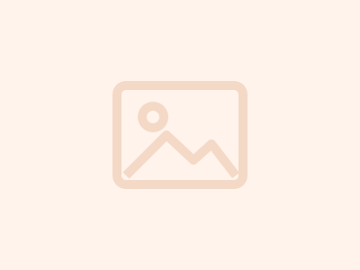

La menuiserie
La menuiserie occupe les travées T2 et T3 de La Fabrique. On y scie, on y rabote, on y tourne et on y assemble le bois, pour réparer, fabriquer ou apprendre.
Les espaces
- la travée T2 : principalement des machines-outils ;
- la travée T3 : principalement des établis et le stockage du bois.
Venir visiter
Curieux de voir l'atelier ? Venez le visiter un jeudi soir à 19 h, pendant les portes ouvertes, que propose l'association.
Les évènements

Accompagnement en menuiserie- Initiation : débiter du bois, les sciesInitiation obligatoire pour utiliser la scie à format en autonomie.
- Initiation : fabrication d'un jeu de TockDécouvrez l'atelier menuiserie en fabriquant un jeu de Tock, et repartez avec !
- Initiation à l'électroportatif (niveau 1)Découvrez l'atelier menuiserie et apprenez à utiliser l'outillage électroportatif !